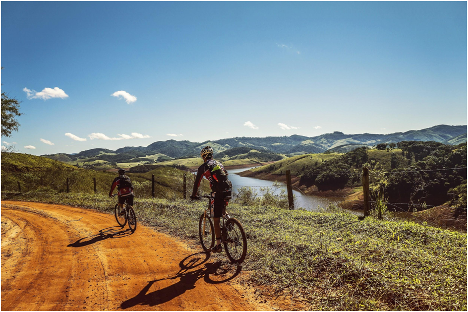
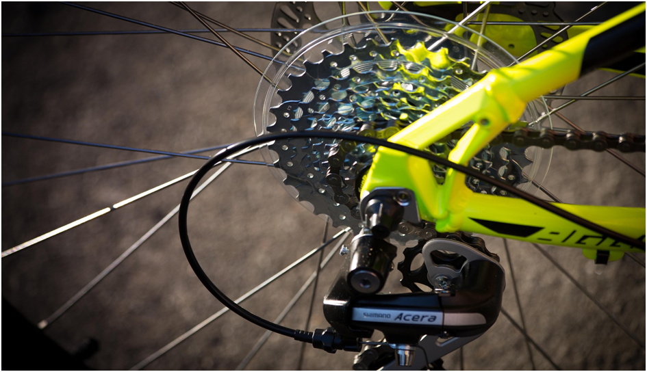
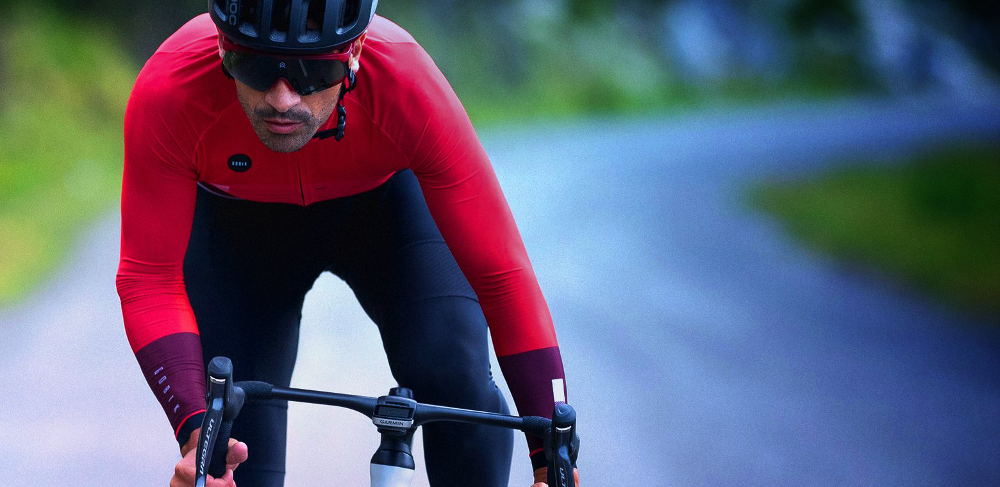
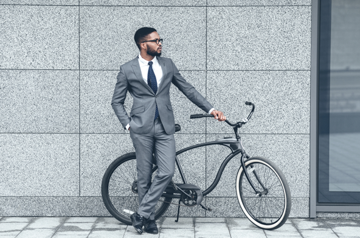
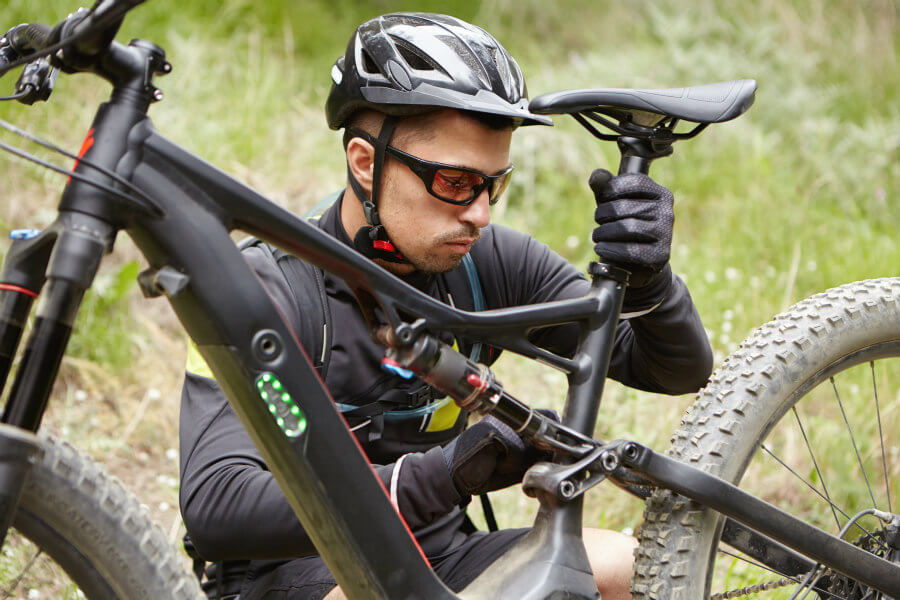
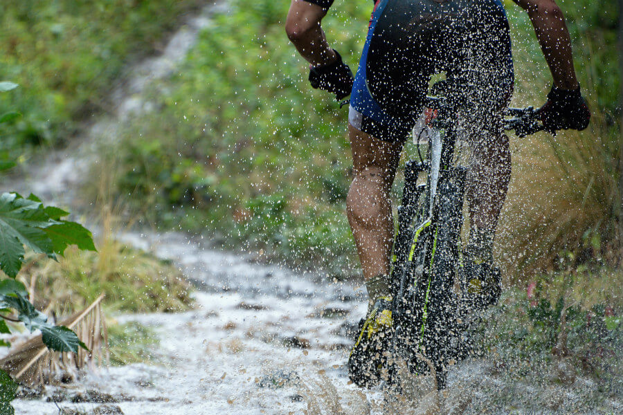

Sigue la actualidad de la mano de MiguelBikes
 Sabemos que ahora con la llegada del verano, y el buen tiempo apetece disfrutar de esas escapadas en bicicleta que tanto hemos echado de menos en este tiempo
En Bikestocks sabemos la importancia que tiene un mecánico para que tu bicicleta esté siempre como el primer día
 La equipación de ciclismo está diseñada con el objetivo de cuidar el cuerpo del ciclista. También tiene la función de proporcionar comodidad y calidez
La bicicleta se ha convertido en un elemento muy visible en las ciudades españolas. Cada vez son más los ciudadanos que apuestan diariamente por el transporte en bici a diario anualmente
Medir correctamente la altura del sillín es uno de los ajustes esenciales a la hora de montar en una bicicleta nueva. De él depende que puedas pedalear cómodamente, obtengas el máximo rendimiento y evites sobrecargas musculares y lesiones
En otoño e invierno la lluvia es, por lo general, un hándicap que impide salir a entrenar en bicicleta. Decimos por lo general porque hay ciclistas a los que les gusta salir a rodar en mojado por diversas razones